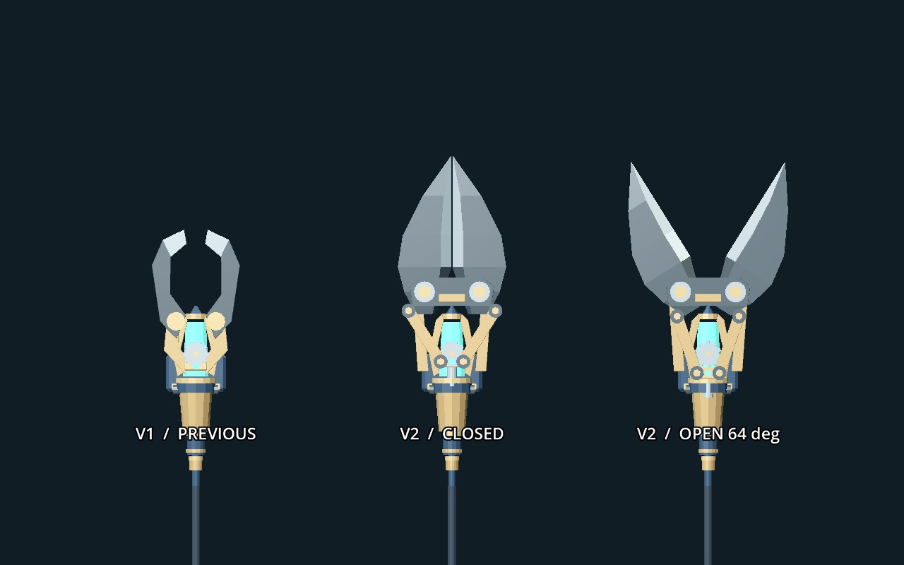
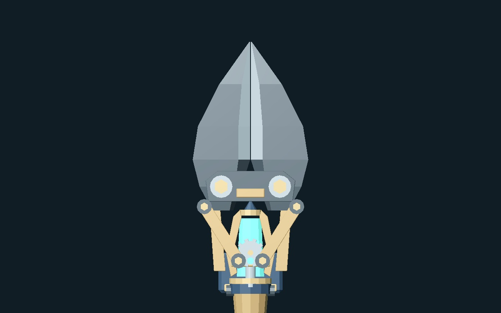

MACHINERY WITCH / BOLT CUTTER / V2
크게 벌리고, 타격 순간 닫히는 날
사진의 볼트커터 구조를 바탕으로 긴 쐐기형 날과 직선 절삭면을 만들었습니다. 준비 동작에서 양쪽 날이 크게 열리고, 실제 피해가 들어가는 순간 빠르게 맞물립니다.
직선 절삭면좌우 합계 64° 개방휘두르기 · 찌르기 동기화강체 연결봉
이전 형태와 비교

실제 공격에서 보기
물리 시뮬레이션은 실제 60Hz입니다. 확대 보기에서는 실제 손에 부착된 공구만 보이도록 적·타격 섬광을 제외하고 조명을 추가했습니다. 0.5배·0.25배는 이 페이지의 재생 속도만 바꿉니다.
날과 구동부

직선 절삭면이 중앙에서 닫힙니다. 양쪽 메시가 교차하지 않도록 작은 간격을 남겼습니다.
1,434개 검사 · 실제 GPU 캡처 357장. 검증 기록 · 제작 파일과 인계 · 이전 지팡이 시안
새 형태는 검토 후보입니다. 임의 자세의 접촉, 실제 절삭 물리와 최종 재질·성능 검토는 별도입니다.